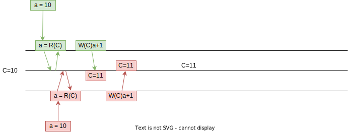
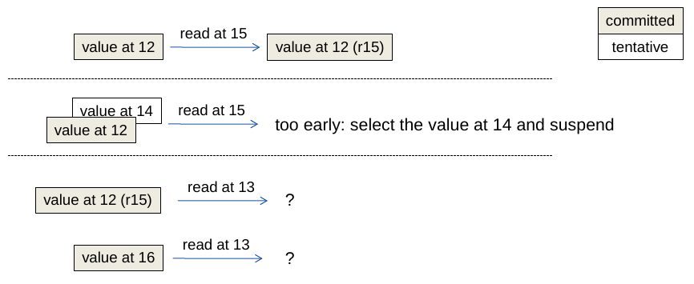
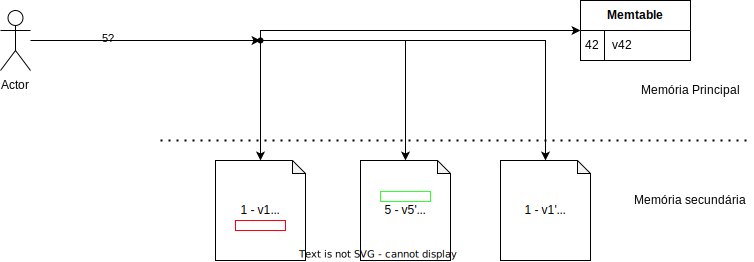
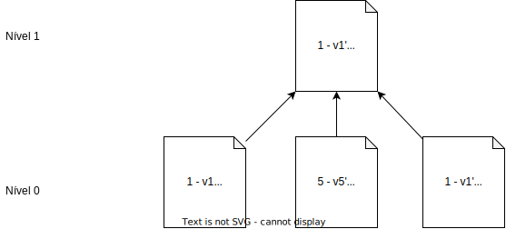

Bancos de Dados
Voltemo-nos agora aos bancos de dados mais tradicionais, isto é, bancos de dados relacionais. Destaco que quando falamos em bancos de dados relacionais, geralmente pensamos em bancos de dados transacionais, mas o que são transações?
Transações
No banco de dados vistos no capítulo anterior, operações são enviadas individualmente para as réplicas do banco. Já no modelo transacional, normalmente pensamos em conjunto de operações em vez de operações individuais; estes conjuntos de operações são as transações.
Considere um sistema bancário que mantém contas com saldos inteiros. Seguindo a notação apresentada anteriormente, \(R(C)10\) é um operação de leitura da conta \(C\) que retorna o valor 10 e \(W(C)20\) é a operação de atualização do saldo de \(C\) para 20. Vamos estender a notação para que \(a = R(C)\) armazene o valor lido de \(C\) em \(a\). Seja \(T\) uma transação que incrementa o valor de uma conta em \(1\); ela pode ser especificada como
\(a = R(C); W(C)a+1\)
Imagine duas instâncias desta transação executando serialmente. Ao final da execução o saldo foi acrescido de 2, como esperado.
Se em vez disso as duas instâncias executassem concorrentemente, teríamos um resultado diverso, mesmo que o esperado fosse o mesmo resultado.

Ao final da execução, apesar do valor ter sido modificado duas vezes, o saldo teria sido acrescido de 1. Esta diferença entre o esperado e o real está enraizada nas garantias dadas por bancos de dados tradicionais, conhecidas como ACID, acrônimo para Atomicidade, Consistência, Isolamento e Durabilidade.
A atomicidade diz respeito ao tratamento das operações como um conjunto indivisível, isto é, ou todas as operações no conjunto são executadas ou nenhuma é.
A propriedade de consistência dita que todas as transições do banco de dados devem respeitar restrições nos seus dados, por exemplo, os tipos de cada entrada no banco e integridade referencial.
Já a propriedade de isolamento se refere a como e quando os efeitos de uma transação passam a ser visíveis para outras transações, possivelmente concorrentes. Há diversos níveis de isolamento, sendo menos restritivos, como consistência eventual1, ou mais restritivo, como seriabilidade estrita.
Finalmente, durabilidade é a garantia de que os resultados de uma transação são permanentemente gravados no sistema, a despeito de falhas.
Caso estas propriedades não sejam garantidas na execução de transações, problemas podem acontecer, como no exemplo anterior. Por exemplo, seja uma transação que move 10% do saldo da segunda conta da primeira para a segunda, isto é, se \(a\) tem saldo inicial 50 e \(b\) tem saldo inicial 100, a transação transfere 10 de \(a\) para \(b\).
| T1(a,b) |
|---|
| \(sB = R(b)\) |
| \(W(b)sB*1.1\) |
| \(sA = R(a)\) |
| \(W(a)sA - (sB*0.1)\) |
E seja uma transação que calcule o somatório dos saldos em todas as contas especificadas, isto é, se aplicada às contas \(a\) e \(b\) do exemplo anterior, retorna 150 como resultado.
| T2([a,b]) |
|---|
| \(sA = R(a)\) |
| \(sB = R(b)\) |
| \(sT = sA + sB\) |
Agora, seja uma execução concorrente destas transações da seguinte forma (tempo passa para baixo) e que o saldo inicial de \(a\) e \(b\) são ambos 10.
| T1(a,b) | T2([a,b]) |
|---|---|
| \(sB = R(b)\) | |
| \(sA = R(a)\) | |
| \(W(b)sB*1.1\) | |
| \(sB = R(b)\) | |
| \(sA = R(a)\) | |
| \(W(a)sA - (sB*0.1)\) | |
| \(sT = sA+sB\) |
Qual o valor final calculado?
Execução
Se \(a\) inicialmente tem 50 e \(b\) 100, então a seguinte execução ocorre:
| T1(a,b) | T2([a,b]) |
|---|---|
| \(sB = R(b)\) = 100 | |
| \(sA = R(a) = 50\) | |
| \(W(b)sB*1.1\) = 110 | |
| \(sB = R(b) = 110\) | |
| \(sA = R(a) = 50\) | |
| \(W(a)sA - (sB*0.1) = 40\) | |
| \(sT = sA+sB = 160\) |
O problema aqui é que dados sendo modificados, isto é, não finais, "vazaram" de T1 para T2, um fenômeno conhecido como dirty read. Isso ocorreu porquê o nível de isolamento provido foi nenhum.
Supondo uma execução de duas instâncias de T1, podemos observar outro problema, que pode deixar o BD em estado inválido.
| T1(a,b) | T1(a,b) |
|---|---|
| \(sB = R(b)\) | |
| \(sB = R(b)\) | |
| \(W(b)sB*1.1\) | |
| \(W(b) sB*1.1\) | |
| \(sA = R(a)\) | |
| \(W(a)sA-(sB*0.1)\) | |
| \(sA = R(a)\) | |
| \(W(a)sA-sB*0.1\) |
Execução
Se \(a\) inicialmente tem 50 e \(b\) 100, então a seguinte execução ocorre:
| T1(a,b) | T1(a,b) |
|---|---|
| \(sB = R(b) = 100\) | |
| \(sB = R(b) = 100\) | |
| \(W(b)sB*1.1 = 110\) | |
| \(W(b) sB*1.1\) = 110 | |
| \(sA = R(a) = 50\) | |
| \(W(a)sA-(sB*0.1) = 40\) | |
| \(sA = R(a) = 40\) | |
| \(W(a)sA-sB*0.1 = 30\) |
Observe que \(sB*0.1\) foi perdido, o que é conhecido como lost update, agora porquê faltou isolamento.
Qual a solução? No primeiro exemplo deste capítulo, uma execução serial das operações não causou problema, enquanto a concorrente sim. Testemos novamente uma execução em que as transações não se sobrepõem.
| T1(a,b) | T1(a,b) |
|---|---|
| \(sB = R(b)\) | |
| \(W(b)sB*1.1\) | |
| \(sA = R(a)\) | |
| \(W(a)sA-(sB*0.1)\) | |
| \(sB = R(b)\) | |
| \(W(b)sB*1.1\) | |
| \(sA = R(a)\) | |
| \(W(a)sA-sB*0.1\) |
Esta solução funciona, mas, na prática, queremos o máximo de concorrência para garantir o melhor desempenho. O que queremos então é uma execução das transações semelhante à serial, para garantir a corretude dos resultados, mas com o desempenho garantido pela execução concorrente. Isto é, não queremos uma execução serial, queremos uma execução equivalente a uma execução serial.
Equivalência Serial
De forma geral, dizemos que duas execuções de transações são equivalentes se
- são execuções das mesmas transações (mesmas operações)
- quaisquer duas operações conflitantes são executadas na mesma ordem nas duas execuções.
Duas operações são conflitantes se
- pertencem a transações diferentes,
- operam no mesmo dado, e
- pelo menos uma delas é escrita.
Uma execução tem equivalência serial se é equivalente a alguma execução serial das transações. Ora, se uma execução é equivalente a uma execução serial e a execução serial não tem problemas relacionados a isolamento, pois não há transação concorrente que acesse dados incompletos, então a execução serial garante resultados corretos. Assim, para obter tanto desempenho advindo da concorrência quanto corretude advinda da serialização, escalone as operações de forma a garantir equivalência serial.
Mas como obter equivalência serial? Não seria viável executar as operações e demonstrar post facto que a execução é correta. Em vez disso, precisamos garantir por construção a equivalência serial, o que é bem mas simples, principalmente se considerarmos a seguinte restrição
- a execução de duas transações tem Equivalência Serial se todos os pares de operações conflitantes entre as transações são executados na mesma ordem.
Revisitemos o exemplo do lost update. Quais operações conflitam nesta execução?
| Operação | T1(a,b) | T1(c,b) |
|---|---|---|
| 1 | \(sB = R(b)\) | |
| 2 | \(sB = R(b)\) | |
| 3 | \(W(b)sB*1.1\) | |
| 4 | \(W(b)sB*1.1\) | |
| \(sC = R(c)\) | ||
| \(W(c)sC-sB*0.1\) | ||
| \(sA = R(a)\) | ||
| \(W(a)sA-sB*0.1\) |
Claramente, os pares (1,3), (2,4) e (3,4) são conflitantes. Para se obter equivalência serial então é necessário garantir que em todos os pares se executem as operações na mesma ordem, isto é, ou da esquerda para a direita ou da direita para a esquerda. Observe que este não é o caso neste exemplo. Mas e se modificarmos a execução como a seguir?
| Operação | T1(a,b) | T1(c,b) |
|---|---|---|
| 2 | \(sB = R(b)\) | |
| 3 | \(W(b)sB*1.1\) | |
| 1 | \(sB = R(b)\) | |
| 4 | \(W(b)sB*1.1\) | |
| \(sC = R(c)\) | ||
| \(W(c)sC-sB*0.1\) | ||
| \(sA = R(a)\) | ||
| \(W(a)sA-sB*0.1\) |
Neste exemplo modificado teremos as operações nos pares de conflitos sendo executadas da direita para a esquerda, o que garante a equivalência serial da execução. Contudo, o modelo de transações usado até agora, em que o conjunto de operações é sempre executado até o fim, não corresponde à realidade. Precisamos adicionar a este modelo a possibilidade da transação ser abortada, isto é, ter seus efeitos revertidos. Sob este novo modelo, considere o seguinte exemplo, onde a transação da direita é abortada.
| T1(a,b) | T1(c,b) |
|---|---|
| \(sB = R(b)\) | |
| \(W(b)sB*1.1\) | |
| \(sB = R(b)\) | |
| \(W(b)sB*1.1\) | |
| \(sC = R(c)\) | |
| \(W(c)sC-sB*0.1\) | |
| \(sA = R(a)\) | |
| \(W(a)sA-sB*0.1\) | |
| aborte! |
Apesar das operações serem ordenadas da direita para a esquerda, houve um dirty read na execução da transação da esquerda. Uma forma de pensar em como isso aconteceu, é considerar que o aborte! é uma operação que toca todos os dados usados pela transação abortada. Assim, o aborte! conflita com as leituras de \(b\) e de \(a\) feitas pela transação da esquerda e, portanto, houve uma violação na ordem de execução das operações.
Para que este dirty read não leve a inconsistências, a transação da esquerda deve também abortar. Esta estratégia pode ser implementada da seguinte forma:
- se uma transação lê um dado atualizado por uma transação não comitada, suspenda a transação executando a leitura.
- se transação que atualizou o dado foi abortada, todas as suspensas que leram dela devem ser abortadas.
- repita passo anterior.
Graficamente, podemos ver o exemplo acima assim, tanto no caso de commit quando de abort da segunda transação.
Apesar de correta, esta abordagem tem um caso patológico que leva a abortos em Cascata: se T1 lê algo que T2 escreveu, e T2 lê algo que T3 escreveu, e assim por diante, se a última transação nesta cadeia de dependências for abortada, todas deverão ser abortadas.
Mas, e se evitarmos dirty reads em vez de tratarmos? Podemos fazê-lo com a seguinte estratégia:
- quando um transação T1 tenta ler um dado "sujo" escrito por T2, suspenda a execução da transação T1, antes da leitura acontecer.
- quando transação T2 for terminada, continue a execução de T1.
O que estamos tentando obter aqui é uma execução estrita, ou seja, uma execução em que Leituras e Escritas devem ser atrasadas até que todas as transações anteriores que contenham escritas nos mesmos dados sejam "comitadas" ou abortadas. Execuções estritas garante Isolamento, contudo, levam a menor concorrência, já que transações ficam suspensas. Fica então a pergunta: como implementar execuções estritas eficientes? A resposta está no controle de concorrência das transações.
Controle de Concorrência
Consideremos três abordagens de controle de concorrência usadas por bancos de dados:
- locking: abordagem pessimista que paga um alto preço de sincronização mesmo quando as transações não interferem umas nas outras.
- multi-versão: abordagem otimista, que tem algo custo quando há muitos conflitos entre as transações.
- timestamp: abordagem mais complexa de se implementar.
Locking
Nesta abordagem, todos os objetos usados por uma transação são trancados, impedindo que sejam acessados por outras transações, até que sejam destrancados. Contudo, se os objetos são destrancados tão logo não sejam mais usados na transação, continuamos a ter dirty reads, como a operação em vermelho na figura a seguir.
Mesmo que se tentasse abortar a transação que executou a dirty read, poderia ser tarde demais, como no exemplo a seguir que demonstra uma escrita prematura.
Estes problemas podem ser evitados com o uso de strict two phase locking, em que as transações trancam o objeto quando primeiro acessado e só destrancam ao final da transação, atomicamente com a terminação.
Já para aumentar a concorrência, é possível usar locks para leitura, compartilhados, e para escrita, exclusivos.
Ou, ainda, locks com diferentes granularidades; em um banco de dados relacional, por exemplo, pode ser possível obter um lock em uma coluna de uma linha do banco, de toda a linha, de toda a relação, ou mesmo de todo o banco de dados.
Mas mesmo com estes ajustes, locks deveriam, via de regra, serem evitados sempre que a probabilidade de conflitos for baixa. Isso porquê os locks são uma abordagem pessimista, que incorrem em overhead mesmo quando transações não acessam os mesmos dados, lembrando que os locks só podem ser liberados no final das transações.
Multi-versão
Uma alternativa otimista aos locks é assumir que não há conflitos nas transações enquanto elas executam e, somente ao final da execução, testar a validade desta premissa e, caso falhe, abortar a transação. O controle de concorrência multi-versão (MVCC, do termo em inglês) faz isso mantendo uma cópia privada dos dados acessados pela transação. Ao final da execução, na fase de validação, se a cópia pública de onde a privada foi copiada não tiver sido modificada, a transação é bem sucedida e atualizações são feitas nas cópias públicas.2
Esta técnica, conhecida como deferred update pois atrasa a atualização da cópia pública até o final da transação, tem como vantagens o baixo overhead, se não houver conflitos. Entretanto, se houver muitos conflitos, o trabalho da transação é todo desperdiçado já que a transação será abortada na validação.
A validação consiste em verificar se os read e write sets de quaisquer transações concorrentes são disjuntos, isto é, se dados transações \(t1\) e \(t2\):
- t1 não deve ler dados escritos por t2
- t2 não deve ler dados escritos por t1
- t1/t2 não deve escrever dados escritos por t2/t1
Na imagem a seguir, a transação preta precisa ser validada ou frente às transações concorrentes vermelhas, já comitadas, ou às azuis, ainda por comitar.

No caso da validação com transações já comitadas (backward validation) a validação pode ser simplificada assim:
- t1: transação sendo validada
- t2: transação já comitada.
- t1 não deve ler dados escritos por t2
Se a validação for com as transações ainda em execução (forward validation) a regra passa a ser:
- t1: transação sendo validada
- t2: transação ainda em execução
- t2 não deve ler dados escritos por t1
É preciso destacar que a forward validation pode levar a um cenário em que nenhuma transação é jamais comitada, pois uma cascata de aborts pode ocorrer.
Timestamping
Uma terceira forma de controlar a concorrência associando uma ordem lógica para a execução das transações, de acordo com o início das transações. Isto é feito atribuindo-se um timestamp a cada transação e garantindo-se que a execução das transações seja é equivalente à execução serial de acordo com os timestamps.3
- transação recebe um timestamp no início
- operações são validadas na execução
- leia somente se nenhuma transação com maior timestamp tiver escrito e comitado
- escreva somente se nenhuma transação com maior timestamp tiver lido e comitado
- transações "executam na ordem do timestamp"
Como implementar?
Como implementar
- objetos tem valores tentativos, não comitados
- objetos tem versões em que foram escritos
- em que foram comitados
- e em que foram lidos

- consistência é testado na execução da operação
Como implementar -- escrita
- escritas tem sucesso somente se versão sendo escrita é maior que versões lidas
- se versão sendo escrita é menor que versão já escrita, ignore e continue
como implementar -- leitura
- leitura com versão v tem sucesso se maior versão é comitada e menor que v ou alguma não comitada
- leitura com versão v é suspensa se maior versão é não comitada e menor que v

- leitura com versão v é abortada se maior versão comitada é maior que v

Bancos de dados distribuídos
Agora que relembramos como transações funcionam e temos uma noção de como podem ser implementadas em um sistema centralizado, vamos tentar entender como fazê-lo em um sistema distribuído.
- múltiplos servidores
- transações em cada servidor
- transações distribuídas
- como obter equivalência serial em transações distribuídas
Transação distribuída
begintransaction(): tid(transaction id)operation(tid,op)endtransaction(tid): ok/nokaborttransaction(tid)
Temos vários papéis sendo desempenhados aqui:
- cliente
- servidor: resource managers
- servidor: transaction monitor/manager
Localmente, cada bd funciona como um sistema centralizado normal, usando abordagens otimistas ou pessimista para garantir consistência.
O grande problema no bd distribuído é garantir o acordo na terminação.
Comprometimento distribuído
O problema...
- transação \(t\) acessa recursos nos resource managers (rm)
- terminar com sucessos \(t\) em todos os rm - commit - ou
- abortar \(t\) em todos os rm
-
ainda que enlaces de comunicação, nós e rm falhem, antes ou durante a terminação da transação.
-
participante -- resource manager "tocados" pela transação
-
coordenador -- transaction manager
-
Cliente decide quando iniciar o commit.
- Cada participante faz commit ou abort da transação local.
pode retornar ok ou nok. - Coordenador não começa a commit até que a \(t\) tenha terminado em todos os participantes e cliente tenha solicitado.
- Participantes falham por parada.
1PC
- cliente envia
endtransaction(tid)para o coordenador - coordenador envia mensagem para participantes "comitarem"
Mas...
- e se um participante retornar nok enquanto outros retornam ok?
- e se um participante não responder?
2PC
- cliente envia
endtransaction(tid)para o coordenador - coordenador envia mensagem para participantes se prepararem para terminar
- coordenador espera que todos se preparem ou digam se não podem
- coordenador envia ordem de terminação
Comprometimento
- um participante \(p\) está pronto para commit se tiver todos os valores modificados por \(t\) em memória estável e nenhuma razão para abortar a transação (outras transações conflituosas fizeram commit?)
- o coordenador não pode começar a terminação até que todos os participantes estejam prontos.
- se algum participante aborta, o coordenador deve abortar.
Problema de acordo, mas não igual ao consenso.
2PC - o protocolo
-
fase 1
- a: coordenador envia vote-request para participantes.
- b: participante responde com vote-commit ou vote-abort para o coordenador; se vote-abort, aborta localmente.
-
fase 2
- a: coordenador coleta votos de todos os processos; se forem todos vote-commit, envia global-commit para os participantes e ok para o cliente
- b: participantes esperam por global-commit ou global-abort
| Coordenador | Participante |
|---|---|
 |
 |
Falha no Participante
Participante falha no estado \(S\) e, ao se recuperar, identifica tal fato ao reprocessar o log de operações em memória durável.
Se está no estado
- INIT: nem sabia que a terminação começou. Aborta unilateralmente, pois ou já abortaram ou vão abortar.
- ABORT: havia votado abort ou recebido global-abort -- continua protocolo.
- COMMIT: estava pronto para terminar a transação com sucesso -- continua protocolo.
- READY: estava esperando por commit ou abort. Precisa saber se coordenador enviou global-commit ou global-abort -- consulta coordenador.
2PC
Por que é difícil?
- E se \(R_i\) falhar depois de ter se preparado?
- E se \(R_i\) falhar mas \(R_j\) continuar funcionando?
- E se todos estiverem desligados quando \(R_i\) se recuperar?
- E se \(R_i\) estiver lento e parecer que a transação falhou?
Falha no Participante
- READY: esperando por commit ou abort. Precisa saber se coordenador enviou global-commit our global-abort -- consulta coordenador.
E se coordenador não estiver presente?
Assumindo que participantes se conhecem, contate participante \(Q\)
- Se \(Q\) em COMMIT , vai para COMMIT
- Se \(Q\) em ABORT , vai para ABORT
- Se \(Q\) em INIT , ordena que Q aborte e, se confirmado, veja passo anterior
- Se \(Q\) em READY , consulta outro participante.
Se todos os participantes em READY? Possivelmente o coordenador já respondeu ao cliente.
Precisa esperar pelo coordenador.
Falha no Coordenador
O problema principal é: e se ninguém ouviu a decisão final do coordenador?
Neste caso, o protocolo não pode continuar, enquanto o coordenador não retornar, pois se os RM abortarem, podem estar contradizendo algo dito ao cliente, por exemplo, "Sim, ATM, pode entregar o dinheiro", ou executando um comando que o cliente vê como anulado, como "Reenvie o pedido de mais 27 carros à fábrica."
Recuperação do Coordenador
Ao se recuperar, o coordenador:
- sabe se começou a terminação de alguma transação
- sabe se já enviou alguma resposta final para as transações inacabadas
- sabe se já recebeu a confirmação de todos os participantes (se transação não estiver em aberto)
- reenvia a última mensagem das transações em aberto.
Otimizações
-
Participantes "somente-leitura"
- Não se importa com a decisão; termina após fase 1.
- Responde com vote-commit-ro
-
Abort presumido
- Se ocorrer timeout, coordenador envia global-abort a todos e esquece transação
- Se questionado, responde com global-abort.
-
Transferência de coordenação
- se houver somente um participante...
- vote-request-transfer
- participante responde com global-commit/global-abort
Coleta de Lixo
Mesmo quando somente um participante falha...
Após receber decisão, o participante pode concluir e esquecer a transação.
Mas e se o participante falho precisar se recuperar e todos os outros envolvidos tiverem esquecido a transação?
Coleta de lixo só pode ser feita quando todos tiverem confirmado a execução da transação e, por isso, Fase 2b é necessária.
3-PC
Estende o protocolo para permitir contornar falha do coordenador.
O Protocolo
- Fase 1a -- Coordenador envia vote-request para participantes.
- Fase 1b -- Participante responde com vote-commit ou vote-abort para o coordenador; se vote-abort, aborta localmente.
- Fase 2a -- Coordenador coleta votos de todos os processos; se forem todos vote-commit, envia prepare-commit para os participantes; se não, global-abort e para.
- Fase 2b -- Participantes esperam por prepare-commit ou global-abort; se o primeiro, respondem com ready-commit; se o segundo, param.
- Fase 3a -- coordenador espera por ready-commit de todos e então envia global-commit.
- Fase 3b -- participantes esperam por global-commit.
| Coordenador | Participante |
|---|---|
Falha no Participante
\(P\) consegue saber o que fazer após se recuperar da falha no estado READY ou PRE-COMMIT
- Participantes e coordenador não distam mais que um estado.
- Se alguém em READY, o coordenador não mandou global-commit ainda; Aborte.
- Se todos em PRE-COMMIT, é possível comitar, comite.
- A execução dos passos anteriores tem que anular o poder do coordenador.
Se todos os participantes em READY?
3PC x 2PC
- 3PC -- Aumenta disponibilidade
- 2PC -- Falha do coordenador é "corner case"
- 3PC -- Aumenta o custo do "caminho feliz" e por isso não é usado na prática
- Nenhum escala e não usá-los é uma das razões para o surgimento dos sistemas NoSQL
Paxos-Commit
Usa instâncias de Consenso Distribuído para votar. Se o consenso é tolerante a falhas e consistente, todos vêem o mesmo resultado na transação.
O protocolo
- Para terminar a transação \(T\), o coordenador envia request-commit a todos os participantes.
- Um participante \(P\) propõe seu voto na instância \(T_P\) de consenso.
-
Todo participante \(P\) espera pelas decisões das instâncias de consenso \(T_i\) para todos os participantes \(i\), inclusive si mesmo; se todas as decisões forem commit, o participante comita a transação.
-
Se cansar de esperar por \(T_Q\), o participante propõe abort em \(T_Q\).
Falha no Participante
- Se o participante falha antes de votar, então alguém votará abort por ele.
- Se o participante \(P\) falha, ou é suspeito de, então é possível que dois votos diferentes tenham sido propostos em \(T_P\); isso não é um problema pois a decisão é a mesma para todos observando a instância.
- Após se recuperar, o participante recupera as decisões de todas as instâncias \(T_i\) e termina apropriadamente.
Log Structured Merge Trees
Idealmente, toda manipulação de dados seria executada a partir da memória principal, tendo assim a menor latência possível. Contudo, para que se tenha também durabilidade das operações executadas, para que os dados manipulados sobrevivam a reinicializações do servidor, intencionais ou não, é preciso armazenar os dados em memória estável, da qual a mais comum são os discos rígidos. Bancos de dados relacionais tradicionalmente armazenam seus dados em disco usando estruturas em árvore, pois estas tem custo amortizado de leitura e escrita \(O(log n)\). Bancos de dados NoSQL, muito usados em cenários de Big Data, em que quantidades muito grandes de dados são geradas e acessadas com grande velocidade, capitanearam um esforço para otimizar operações de escrita enquanto também tentando não aumentar significativamente os tempos de leitura.
É notório que operações em disco são muito mais lentas que em memória principal, mas o que exatamente é lento no acesso ao disco? Essencialmente, o posicionamento da cabeca de leitura/escrita na trilha correta do disco, pois esta operação é mecânica. Por esta razão, acessos aleatórios são mais custosos que acessos sequenciais, pois neste o custo de posicionamento é pago apenas uma vez. Alguns bancos de dados, como o Cassandra, armazenam os dados na forma de uma Log Structured Merge Tree, ou LSMT, que acessa o disco quase que exclusivamente de forma sequencial, minimizando assim o impacto da durabilidade no desempenho do sistema.
Considere um banco armazenando uma pequena quantidade de dados, que cabe em memória principal Usando LSMT, os dados são mantidos em memória principal em estruturas de dados denominadas memory table, ou simplesmente memtables. Operações de escrita são "logadas" e um commit log, em disco, antes de serem aplicadas às memtables e confirmadas para o cliente. Neste cenário o acesso ao disco na escrita é sequencial, o melhor que se pode ter em um disco, e a recuperação dos dados é feita diretamente da memória, rapidamente.
No caso de uma reinicialização do processo, a reexecução do commit log restaurará o estado da memtable.
Observe que a leitura do commit log é sequencial, o que acelera a reexecução. Ainda assim, se o commit log for extenso, reexecutá-lo demandará um tempo significativo. Uma forma de acelerar o processo é fazer snapshots da memtable de forma sincronizada com a escrita no log. Isto é, digamos que todas as operações de escrita, até a décima, estão salvas no commit log e refletidas na memtable. Digamos também que todas as operações são modificações da mesma linha do banco de dados em memória. Se um snapshot é tomado, ele será correspondente ao commit log, isto é, conterá o efeito de exatamente as mesmas 10 operações, mas de forma mais compacta que o log, uma vez que o log conterá dez operações e o snapshot somente uma linha de dados.

Após o snapshot ser concluído, o log correspondente pode ser apagado, assim como snapshots anteriores.
Novas operações de escrita devem ser armazenadas em um novo log e, no caso de uma reinicialização, primeiro se deve restaurar o snapshot e então o novo log.
Para lidar com corrupções de arquivo no sistema, pode ser uma boa ideia manter mais do que o último log e snapshot, já que a recuperação do estado exigiria voltar mais atrás na reexecução de operações.
Observe que, além da escrita dos logs, todos os outros acessos ao disco também são sequenciais, seja o flush das memtables, ou a leitura dos snapshots para recuperação e do commit log para reexecução e, já que operações de leitura são todas respondidas da memória, o sistema terá um excelente desempenho. Contudo, há outro limitante de desempenho importante, relacionado à premissa pouco realista de que os dados cabem todos em memória. Isto é, se os dados não cabem em memória, snapshots serão importantes não somente para permitir coletar lixo dos logs, isto é, dados obsoletos, mas também, para usar a capacidade de armazenamento dos discos.
Consideremos então um cenário em que a memtable cabe apenas n entradas; quando a operação para adicionar \(n+1\)-ésima entrada à memtable é recebida, um flushs dos dados para um novo snapshot é feito e a memtable é resetada, liberando espaço em memória. Para melhorar o desempenho, estas descargas podem ser feitas proativamente antes da chegada de novas entradas e fora do caminho crítico da operação de escrita, mas isto é apenas uma otimização e portanto não a consideraremos aqui.
Neste novo fluxo, os arquivos em disco não correspondem mais a snapshots do banco de dados mas a porções dos dados, então nos referiremos a eles como stable storage tables, ou sstables, em oposição às memtables, pelo menos por enquanto.
Compactações
Apesar deste novo fluxo de escrita aumentar a capacidade de armazenamento do nosso banco de dados, ele traz problemas para o fluxo de leitura. Digamos que a chave \(k\) teve um valor atribuído e descarregado em uma sstable em diversas ocasiões. O primeiro problema aqui é que há vários valores antigos associados a \(k\), inutilmente e ocupando espaço, isto é, lixo.

O segundo é que caso o valor associado a \(k\) seja requisitado, o sistema deverá retornar a última versão, que pode estar em diversos arquivos. Para lidar com ambos os problemas, podemos compactar as sstables juntas, eliminados dados obsoletos e minimizando o número de arquivos a serem pesquisados no caso de leitura. Caso a sstables estejam ordenadas, o procedimento de compactação pode ser feito como a união de dois segmentos de dados no merge sort, isto é, iterando-se paralelamente nos dois arquivos e escolhendo sempre a menor chave da vez e movendo-a para um novo segmento que conterá a união dos dados.

A figura a seguir mostra um exemplo que várias sstables de nível 0, aquelas geradas por flushs, são unidas gerando sstables de nível 1 e assim sucessivamente. Observe como as compactações geram uma árvore (na verdade, uma floresta), razão do nome merge tree.

No caso de uma leitura, somente as tabelas mais à direita e de nível mais alto precisam ser consultadas e portanto as sstables já usadas como entrada podem ser eliminadas como lixo do sistema. Ainda assim, no caso de uma leitura, diversas sstables potencialmente contém o dado a ser retornado. O problema se agrava em sistemas em que partes do dado possam ser gravadas independentemente, como no CassandraDB, em que cada coluna é independente das outras. Diversas propostas poderiam ser feitas para se identificar mais rapidamente se uma sstable contém uma chave.
Por exemplo, pode-se associar a cada tabela um bitmap indicando a presença ou não de uma certa chave, mas esta abordagem obviamente falha se o espaço de chaves for grande. Outra possibilidade é lembrar a faixa de chaves contida na tabela. Esta estratégia pode ser útil caso haja localidade no espaço de chaves no momento da escrita, mas falhará miseravelmente se o espaço de chaves for usado uniformemente, resultando em faixas grandes entre a menor e maior chaves de cada tabela. Como acelerar a identificação das sstables pertinentes? Entram em cena os filtros de Bloom.
Filtros de Bloom
De acordo com nossa fonte mais que confiável, a Wikipedia
Bloom Filter
A Bloom filter is a space-efficient probabilistic data structure, conceived by Burton Howard Bloom in 1970, that is used to test whether an element is a member of a set. False positive matches are possible, but false negatives are not, thus a Bloom filter has a 100% recall rate. In other words, a query returns either "possibly in set" or "definitely not in set".
Se associarmos a cada sstable um filtro de Bloom, então só será preciso lê-la se o filtro correspondente disser que a chave possivelmente está contida, como no seguinte exemplo.

Mas como exatamente construímos um filtro de Bloom? Iniciamos com um vetor de bits inicialmente zerados e um conjunto finito de funções de hash cujo resultado seja uniformemente distribuído no tamanho do vetor de bits. Para cada elemento colocado no conjunto a ser refletido pelo filtro, aplicamos cada uma das funções hash e colocamos o bit 1 na posição do vetor igual ao resultado da função. No exemplo a seguir, inserimos os elementos x, y e z e usamos três funções hash.

Na consulta, cada elemento passa por pelas mesmas funções hash para identificar quais bits do vetor ler. Se algum dos índices apontados não estiver com um 1, como no caso do c, no exemplo, o elemento não pertence ao conjunto. Caso contrário, o filtro responderá que é possível que pertença.
Mas quão bom é um filtro de Bloom na identificação do das sstables? O filtro será melhor se os bits 1 forem devidos a menos elementos mapeando para tal posição, pois se muitos elementos mapearem para a mesma posição, falsos positivos podem ocorrer. Assim, de outra forma, quais fatores influenciam na taxa de falsos positivos do filtro?
- o número \(n\) de elementos no conjunto, uma vez que quanto mais elementos, mais bits 1 no vetor;
- o número \(k\) de hashes, pois quanto mais hashes, mais bits transformados em 1; e,
- o número \(m\) de bits no vetor, pois quanto menos bits, mais colisões de bits.
De forma mais precisa,
- a probabilidade de setar um certo bit na inserção de um elemento é \(1/m\), e
- a probabilidade de não setar tal bit é \(1 - 1/m\);
- a probabilidade de \(k\) hashes não setarem um bit é \((1 - 1/m)^k\);
- a probabilidade de não setar um bit após \(n\) inserções é \((1 - 1/m)^{kn}\);
- a probabilidade de setar um bit após \(n\) inserções é \(1 - (1 - 1/m)^{kn}\)
Logo,
- a probabilidade de falso positivo \(p = (1 - (1 - 1/m)^{kn})^k \approx (1 - e^{-kn/m})^k\) O que nos permite chegar à relação
- \(m/n = - 1.44\log_2 p\), em que podemos calcular \(m\) em função do \(n\) esperado e do \(p\) desejado. E podemos também identificar o \(k\) ótimo para a situação, pela equação
- \(k = - \frac{\ln p}{\ln 2} = - \log_2 p\)
Uma forma "simples" de visualizar este resultado é dada pela figura a seguir, em que o eixo Y dá a taxa de falsos positivos do filtro em função do número de elementos inseridos, indicado no eixo X, para diversas configurações, apresentadas como curvas. Por exemplo, com um filtro com \(m = 2^{24}b = 2MB\), após 1 milhão de inserções, tem-se probabilidade de falsos positivo \(p = 0,0001\).
TODO
Combinar
CAP
TODO
Incluir explicação
Referências
- Balancing Strong and Eventual Consistency with Datastore
- https://blog.yugabyte.com/a-primer-on-acid-transactions/
- https://jepsen.io/consistency
- https://fauna.com/blog/demystifying-database-systems-part-4-isolation-levels-vs-consistency-levels
- https://www.postgresql.org/docs/9.5/transaction-iso.html
- Inspirado nas notas de aula de Johan Montelius e Vladimir Vlassov, da disciplina ID2201 Distributed Systems, KTH Royal Institute of Technology. Imagens copiadas descaradamente de seus slides em https://www.kth.se/social/files/57c2cbd7f276541680e39e6d/transactions.pdf
- https://www.cs.ucy.ac.cy/~dzeina/courses/epl446/lectures/16.pdf
- https://www.cs.princeton.edu/courses/archive/fall18/cos418/docs/p8-consistency.pdf
- https://aphyr.com/posts/313-strong-consistency-models
- Modern Algorithms and Data Structures: Bloom-Filter
-
Consistência no sentido visto no capítulo anterior, não no sentido ACID. ↩
-
Na prática, a atualização consiste apenas em mudar um ponteiro para apontar para a cópia privada. ↩
-
Baseado no material disponível em Distributed Systems, Basic Course. ↩